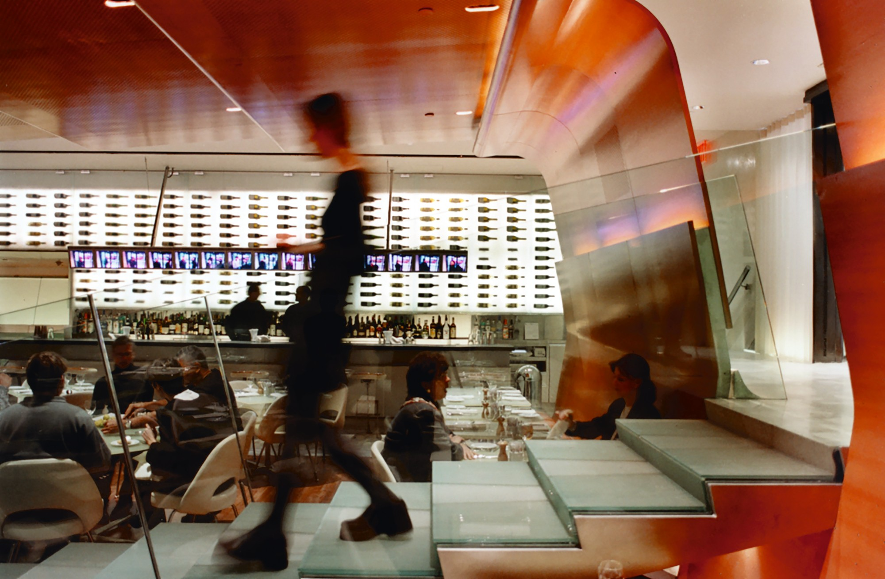
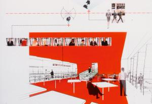

The Brasserie
(New York, New York)

The original Brasserie was designed by Philip Johnson and opened two years after the completion of the Seagram Building, in 1958. A legendary late-night spot for the Studio 54 crowd, the restaurant remained a popular round-the-clock eatery until it was destroyed by a kitchen fire in 1995. After it sat vacant for four years, the restaurant operator hired an architect to redesign the restaurant in a kitschy historical style. The construction plans had to be approved by Phyllis Lambert, who had originally selected Mies van der Rohe to design the building and continued to serve as its guardian and aesthetic conscience, protecting it from the vagaries of time and bad commercial impulses. Lambert immediately rejected the restaurant plans, tossing years of work into the waste bin. Intervening in the building’s history once again, she selected her preferred architect.
The design of the new Brasserie was prompted by the irony of its location. Lodged in the stone base of New York’s quintessential Modernist glass tower, the restaurant was entirely opaque, without a single pane of glass. The new design, by contrast, is a study of glass, transparency, and vision itself. A live video camera outside the entry feeds a plasma monitor inside and creates a virtual transparency between the street and foyer. This surrogate electronic window straddles the stone wall of the building’s base. The ritual of making an entrance begins at the revolving front door. A sensor above it automatically triggers the capture of a video portrait of each arriving patron; their surveillance-like image is added to a continuously changing video display over the bar. Entry into the main dining room, one-half level below the street, is effectively a runway walk: after patrons are announced on-screen, they appear in the flesh, descending down a long glass stairway and landing in the center of the dining room, where they are escorted to a table. The restaurant also offers other opportunities to consider the many attributes of glass, including its fragility, its optical properties, and its invitation to voyeurism.

01 / 04
Project Information
Location - New York, United States
Size (GSF) - 7000
Credits
Partners - Elizabeth Diller and Ricardo Scofidio
Project Leaders - Charles Renfro
Sustainability & Ecology Director - Sean Gallagher
Designers - Deane Simpson, Lyn Rice, Matthew Johnson, and Nicholas de Monechaux
External Credits
EAR STUDIO
STRUCTURED ENVIRONMENT
Lighting Design - RICHARD SHAVER
Curtain Design - MARY BRIGHT
2X4
Z CORPORATION
CONSTRUCTION BY DESIGN